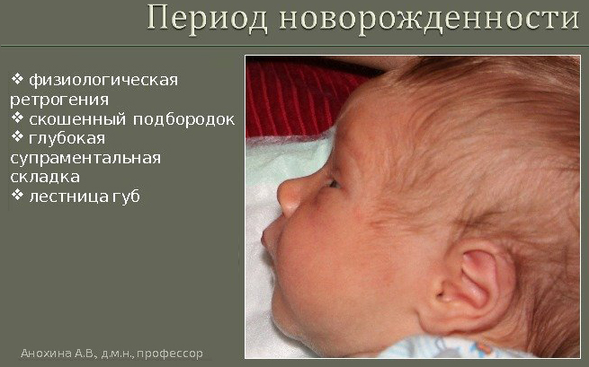
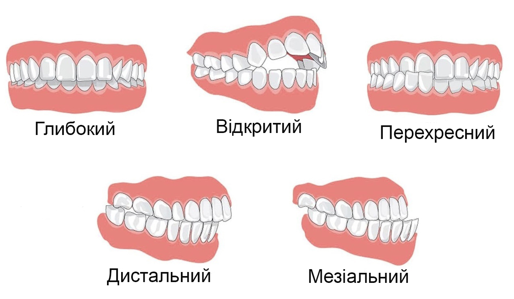
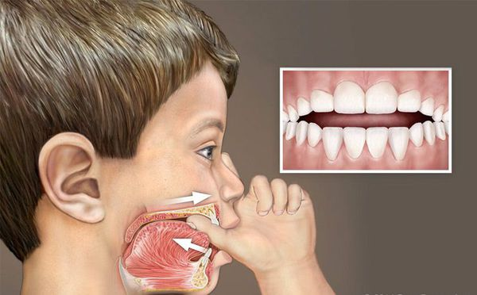
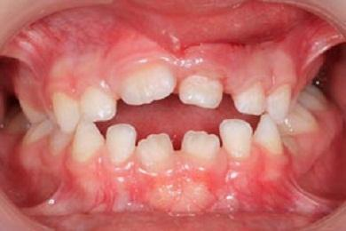
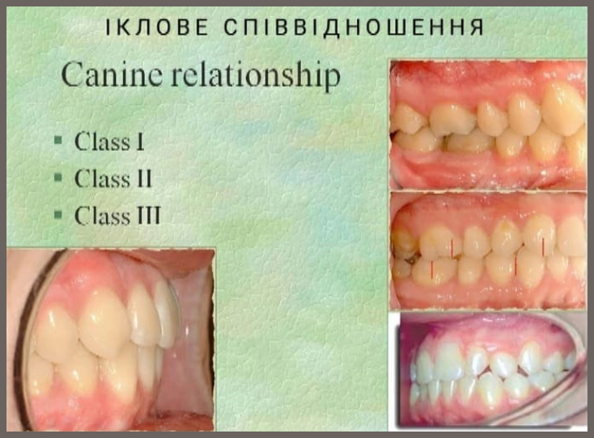

Смоктання груді і формування прикусу в дитини
Часто ми чуємо від лікарів про те, що тривале смоктання груді формує неправильний прикус. Зрозуміймо, що ж насправді негативно впливає на прикус. Перша причина – це генетика. Друга причина – смоктання пустунців (сосок, дурників), пляшок з сосками, пальчиків. Третя причина - аденоїди.

У новонароджених відмічається так звана ретрогенія, це тоді коли нижня щелепа розміщена до заду відносно верхньої. Співвідношення вирівнюється в 6-8 міс, але лише при правильному грудному вигодовуванню. Це відбувається тому що при смоктанні материнських грудей щелепний апарат дитини активно працює. Нижня щелепа опускається і висувається вперед, а язик здійснює хвилеподібні рухи під час смоктання, в цей момент також задіяні м'язи язика, дна ротової порожнини, мімічні м'язи. Фізіологічне положення щелепного апарату під час смоктання материнських грудей сприяє тому, що нижня щелепа піддається більш інтенсивному тренуванню, а значить, зростає швидше верхньої.
Генетика впливає на прикус, коли зуби великі, а щелепа невелика. Тоді відбувається скупчення зубів. Також форма черепа і щелеп теж буває різна генетично.
Чому виникають порушення прикусу після смоктання пустунців чи пляшок з сосками? По-перше - мамина грудь - дуже м'яка і, потрапляючи в рот дитини, підлаштовується під його форму. А штучна соска, навпаки, досить непластична, тому пристосовуватися під введений сторонній об'єкт доводиться вже ротовій порожнині дитини.
По-друге - коли дитина смокче пустунця чи пляшку з соскою, то лицеві м’язи не повністю задіяні; дитина не докладає зусиль для добування молока і тому м’язи відстають у розвитку, а з ними і нижня щелепа; ретрогенія так і залишається - і формується неправильний прикус (дистальний). Крім того, внаслідок смоктання пустунця відбувається тиск на передню частину щелепи, і внаслідок цього неправильно прорізуються зуби: вони починають йти вперед (відкритий прикус).

Механізм смоктання різних предметів призводить до слабкого розвитку кругових м'язів обличчя, а також до звички виштовхувати язик з рота, роблячи шкідливий тиск язика на зуби (мезіальний, перехресний прикус).

Смоктання пальчика здійснює тиск на тверде піднебіння і на верхню щелепу, внаслідок чого верхня щелепа видовжується в передньому відділі, а піднебіння набуває неправильної форми.

Яким чином на прикус впливають аденоїди? Аденоїди — це надмірне збільшення носоглоткової мигдалини. Відбувається воно внаслідок запальних процесів верхніх дихальних шляхів, інфекційних захворювань. Діти, які мають аденоїди, мають утруднене дихання, вночі змушені дихати через рот, внаслідок чого нижня щелепа зміщується назад а верхні зуби висуваються вперед.
Якщо вже є порушення молочного прикусу, то постійний прикус теж буде сформований неправильно.
Як щодо результатів досліджень? Чи справді годування грудьми може зменшити ризик неправильного прикусу?
Автори мета-аналізу (2017р) визначили 7 досліджень, які були включені в огляд. Вони виявили, що у дітей, яких годували грудьми неоптимально (з використанням мамозамінників), є підвищений ризик розвитку неправильних прикусів, а також існує взаємозв'язок між тривалістю грудного вигодовування (менше 12 місяців) та розвитком патологій прикусу.
Маленькі діти з нетривалим грудним вигодовуванням мають вищу поширеність та коефіцієнт ризику патологічних прикусів. У них підвищений ризик розвитку:
- II класу за ікловим співвідношенням
- перехресного прикусу
- переднього відкритого прикусу

Ще одне дослідження показало, що грудне вигодовування було захисним фактором від неправильних прикусів. Шанси збільшувались зі збільшенням тривалості грудного вигодовування. Але, незалежно від тривалості, ГВ захищало від виникнення відкритого прикусу.
Для дітей, яких годували груддю до 6 місяців, ГВ захищало від надмірної протрузії, відкритого прикусу, перехресного прикусу та скупченості зубів. Грудне вигодовування протягом 12 місяців або довше асоціювалося з меншими шансами надмірної протрузії, відкритого прикусу та перехресного прикусу. Грудне вигодовування виключно протягом 6 місяців також було захисним фактором проти неправильного прикусу, однак дослідження з цього питання показали низьку якість.
Підсумуємо: на генетику ми вплинути не можемо, а от не використовувати пустунця і пляшку з соскою цілком в наших силах. Не піддавайтесь спокусі мати їх вдома, навіть якщо це подарунок. Бабусі чи родичі часто радять дати дитині пустунця або пляшку з сумішшю, бо на їхню думку, дитина яка плаче або часто смокче груди, означає ненаїдається/переїдає/мало молока/молоко неситне тощо. Тільки ви, мама дитини, вирішуєте як буде краще для вашої дитини і тому не соромтеся казати "НІ" бабусям та іншим родичам. У випадку смоктання пальців, зверніться до сімейного лікаря, щоб знайти причину та якнайшвидше її усунути. Не займайтесь самолікуванням: намазування пальців чимось несмачним не вирішує дану проблему.
Статтю редагувала: Юлія Олех